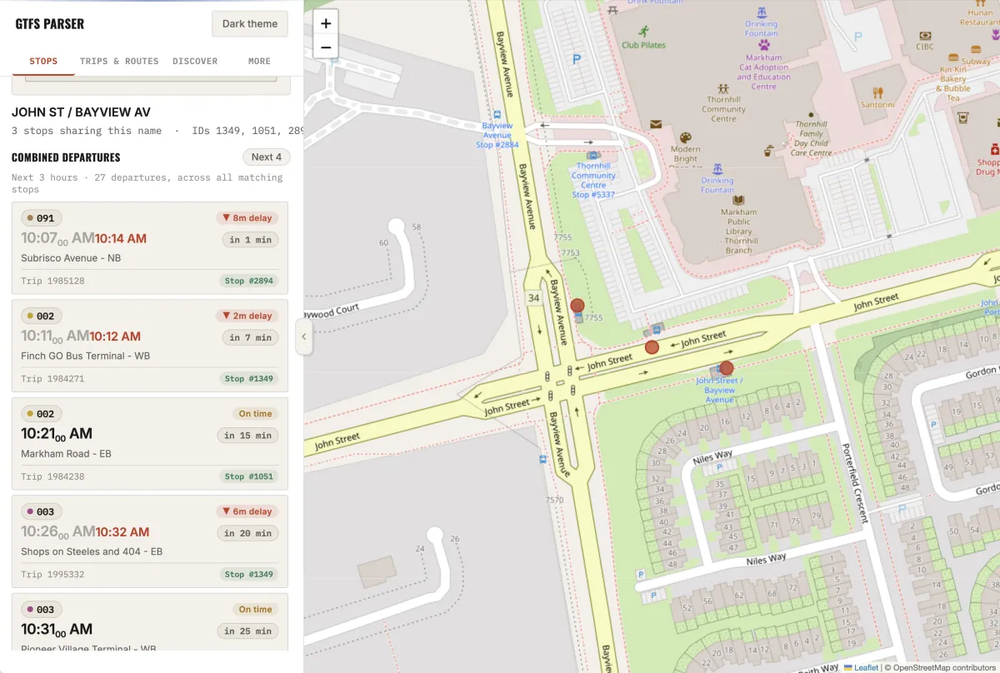
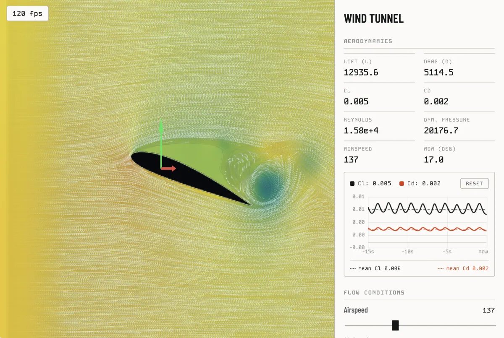
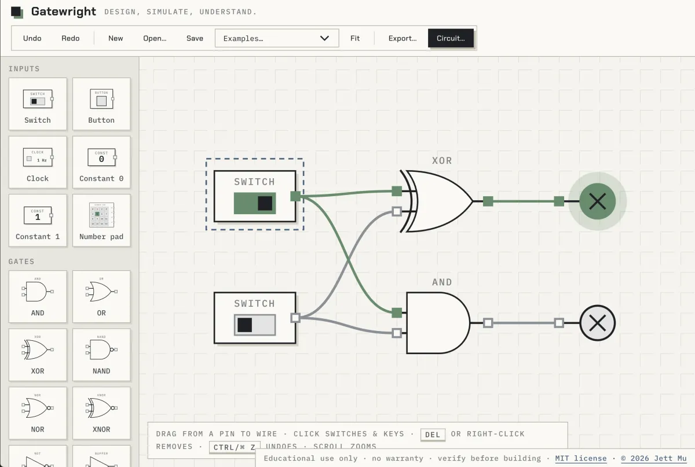

Projects
Things I've built. Each one has a live demo you can open in the browser, its source code, and a write-up on how it works.
-

GTFS Parser
A C++ library that reads transit schedules and live GTFS feeds, plus a web app for departures, trips and bus positions.
Read the write-up -

Wind Tunnel
A GPU flow solver for NACA airfoils. Reshape the wing and watch lift, drag and pressure update live in the browser.
Read the write-up -

Circuitwright
A circuit simulator. Wire up parts, run it, and probe voltages on a built-in oscilloscope.
Read the write-up -

Gatewright
A digital logic sandbox. Drop in switches, clocks and gates, wire them together, and watch signals propagate.
Read the write-up